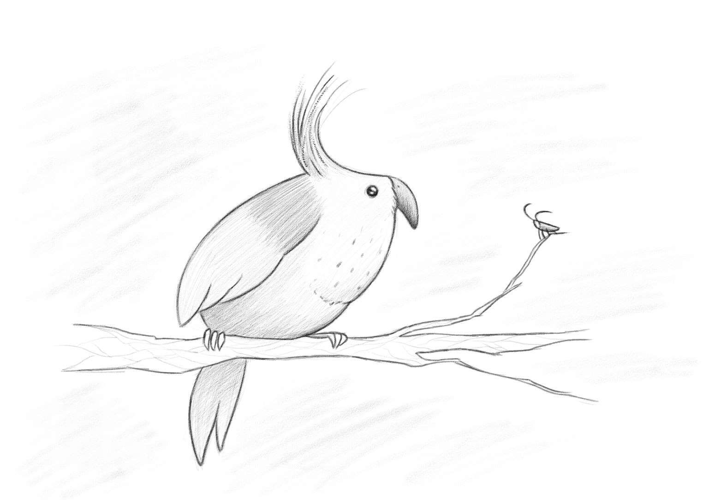

About
Audrey is an aspiring artist with a strong interest in web development. She is hoping to work on exciting web design projects with innovative and inclusive ogranizations in the future. User experience is an important factor to Audrey as well and she aims to create more user-friendly and accessible sites. With her background in design, she aims to apply aesthetic principals to all of her projects.
When she is not drawing or learning about web development, Audrey likes to invest in some of her other passins. Other interests Audrey likes to explore are urban design and development, bike riding, rollerblading, drawing, and reading about current events. A fun fact is that she has been trying to memorize the name of every country in the world. With her aptitude towards creativity and inclusitivy, as well as her curiousity for various subjects, she is hoping to inpsire more inlcusive and peaceful attitudes through her work.
Media of choice:
- Digital Illustration
- Charcoal
- Ink
Number of Works
| Works in Total: | 25 |
|---|---|
| Ink Sketches: | 16 |
| Animated Works: | 4 |
| Charcoal Sketches: | 5 |
You may view her work here.
